3.1.1 FACEPLATE
Cada inversor possui um painel com informações básicas sobre o status do equipamento. Ao clicar nesse painel, é possível acessar a tela de operação do inversor.
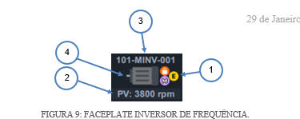
FIGURA 9: FACEPLATE INVERSOR DE FREQUÊNCIA.
ÍCONES FACEPLATE INVERSORES
| Ícone | Descrição |
|---|---|
| 1 |
Indicadores de estado do motor:
|
| 2 | Velocidade atual do motor. |
| 3 | Nome do inversor. |
| 4 |
Desenho do motor, que muda de cor conforme o status:
|
TABELA 9: ÍCONES FACEPLATE – INVERSORES.
3.1.2 OPERAÇÃO
A operação do inversor é semelhante à partida direta apresentada anteriormente, com diferenças nas configurações e na visualização do setpoint de velocidade.
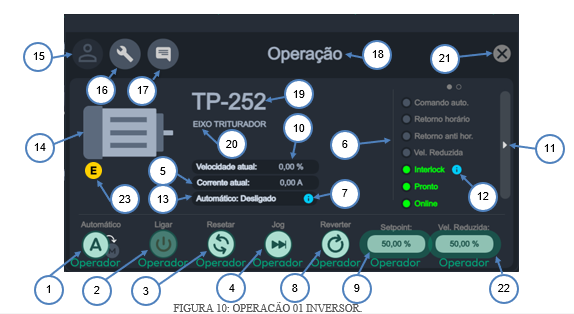
FIGURA 10: OPERAÇÃO 01 INVERSOR.
ÍCONES TELA DE OPERAÇÃO - INVERSORES
| Ícone | Descrição |
|---|---|
| 1 | Seleciona o modo manual ou automático. |
| 2 | Botão para ligar o motor. |
| 3 | Botão para resetar falhas. |
| 4 | Aciona o motor em modo Jog enquanto o botão estiver pressionado. |
| 5 | Mostra a corrente atual do motor. |
| 6 | Painel de informações resumidas. |
| 7 | Acessa a tela de diagnóstico de falhas. |
| 8 | Inverte o sentido de giro do motor, se habilitado. |
| 9 | Campo para definir o setpoint de velocidade. |
| 10 | Mostra a velocidade atual do inversor. |
| 11 | Visualiza parâmetros e leituras do inversor. |
| 12 | Acessa a tela de interlock. |
| 13 | Mostra o status do inversor. |
| 14 |
Desenho do motor, que muda de cor conforme o status:
|
| 15 | Acessa a aba de operação. |
| 16 | Acessa a aba de parâmetros. |
| 17 | Acessa a aba de mensageria. |
| 18 | Nome da aba. |
| 19 | Nome do equipamento. |
| 20 | Descrição do equipamento. |
| 21 | Botão para fechar o pop-up. |
| 22 | Reduz a velocidade para operação em baixa rotação. |
| 23 |
Indicadores de estado do motor:
|
TABELA 10: ÍCONES TELA DE OPERAÇÃO – INVERSORES.
3.1.3 PARÂMETROS DO INVERSOR
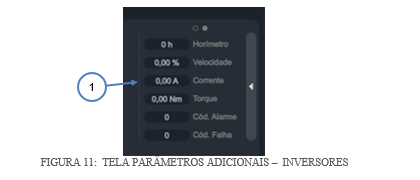
FIGURA 11: TELA PARÂMETROS ADICIONAIS – INVERSORES.
ÍCONES TELA DE PARÂMETROS - INVERSORES
| Ícone | Descrição |
|---|---|
| 1 | Apresenta os parâmetros e as leituras do inversor em tempo real. |
TABELA 11: TELA PARÂMETROS ADICIONAIS – INVERSORES.
3.1.4 DIAGNÓSTICO DE FALHAS
A tela apresenta o diagnóstico de falhas e estados do equipamento. Os estados esperados para o funcionamento são indicados na cor verde quando ativos. As falhas e condições inadequadas são indicadas em cinza escuro.
FIGURA 12: TELA DIAGNÓSTICO DE FALHAS - INVERSOR.
ÍCONES TELA DIAGNÓSTICO DE FALHAS - INVERSOR
| Ícone | Descrição |
|---|---|
| 1 | Retorna para a aba de operação. |
| 2 | Indicador de status ativo. |
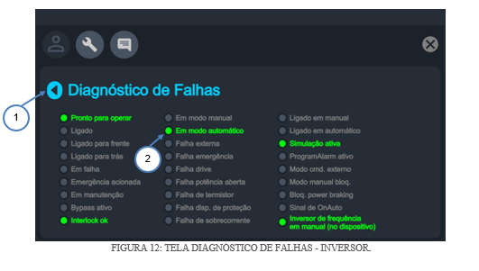
TABELA 12: ÍCONES TELA DIAGNÓSTICO DE FALHAS - INVERSOR.
3.1.5 PARÂMETROS
Esta aba permite configurar os parâmetros do inversor e só pode ser manipulada por usuários de manutenção.
GUIA 01
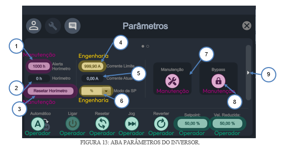
FIGURA 13: ABA PARÂMETROS DO INVERSOR.
ÍCONES ABA PARÂMETROS - INVERSOR
| Ícone | Descrição |
|---|---|
| 1 | Define o valor para gerar alerta do horímetro. |
| 2 | Mostra o horímetro do inversor. |
| 3 | Botão para zerar o horímetro. |
| 4 | Define o limite máximo de corrente do equipamento. |
| 5 | Mostra a corrente do inversor. |
| 6 | Seleciona a unidade de medida do setpoint. |
| 7 | Coloca o inversor em modo manutenção. |
| 8 | Coloca o inversor em modo bypass. |
| 9 | Visualiza os parâmetros e as leituras do inversor. |
TABELA 13: ÍCONES ABA PARÂMETROS - INVERSOR.
GUIA 02
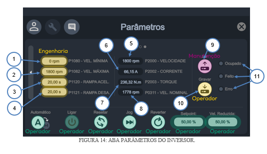
FIGURA 14: ABA PARÂMETROS DO INVERSOR.
ÍCONES ABA PARÂMETROS - INVERSOR
| Ícone | Descrição |
|---|---|
| 1 | Define o Parâmetro 1080 – Velocidade Mínima. |
| 2 | Define o Parâmetro 1082 – Velocidade Máxima. |
| 3 | Define o Parâmetro 1120 – Rampa de Aceleração. |
| 4 | Define o Parâmetro 1121 – Rampa de Desaceleração. |
| 5 | Mostra o Parâmetro 2000 – Velocidade. |
| 6 | Mostra o Parâmetro 2002 – Corrente. |
| 7 | Mostra o Parâmetro 2003 – Torque. |
| 8 | Mostra o Parâmetro 0311 – Velocidade Nominal. |
| 9 | Lê os parâmetros do inversor e apresenta na tela. |
| 10 | Envia os parâmetros configurados para o inversor. |
| 11 | Indica o resultado da comunicação ou ação com o inversor. |
TABELA 14: ÍCONES ABA PARÂMETROS - INVERSOR.
3.1.6 MENSAGERIA
A aba de mensageria possui quatro guias:
- Histórico de ações dos usuários.
- Falhas ativas do equipamento.
- Gráfico de variação da corrente nas últimas horas.
- Gráfico de monitoramento do setpoint de velocidade.
3.1.6.1 LOG DE AÇÕES
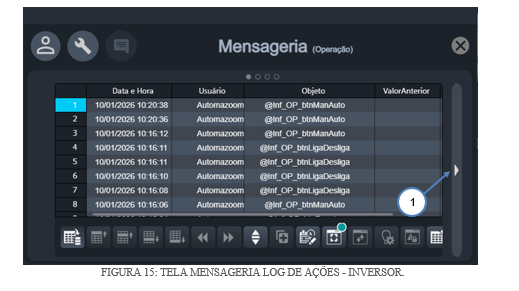
FIGURA 15: TELA MENSAGERIA LOG DE AÇÕES - INVERSOR.
| Ícone | Descrição |
|---|---|
| 1 | Avança para a guia de falhas ativas. |
TABELA 15: ÍCONES TELA MENSAGERIA LOG DE AÇÕES - INVERSOR.
3.1.6.2 GRÁFICO VELOCIDADE
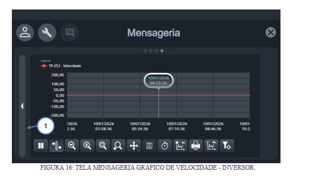
FIGURA 16: TELA MENSAGERIA GRÁFICO DE VELOCIDADE - INVERSOR.
| Ícone | Descrição |
|---|---|
| 1 | Retorna para a tela anterior (gráfico de corrente). |
TABELA 16: ÍCONES TELA MENSAGERIA GRÁFICO VELOCIDADE - INVERSOR.
3.1.6.3 GRÁFICO CORRENTE
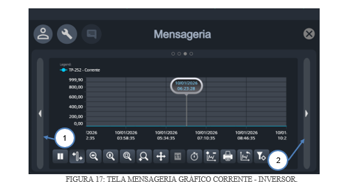
FIGURA 17: TELA MENSAGERIA GRÁFICO CORRENTE - INVERSOR.
| Ícone | Descrição |
|---|---|
| 1 | Retorna para a tela anterior (falhas ativas). |
| 2 | Avança para a próxima tela (gráfico de velocidade). |
TABELA 17: ÍCONES TELA MENSAGERIA GRÁFICO SETPOINT - INVERSOR.
3.1.6.4 FALHAS ATIVAS
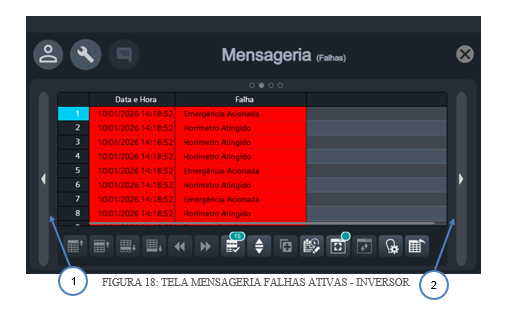
FIGURA 18: TELA MENSAGERIA FALHAS ATIVAS - INVERSOR.
| Ícone | Descrição |
|---|---|
| 1 | Retorna para a tela anterior (log de ações). |
| 2 | Avança para a próxima tela (gráfico de corrente). |
TABELA 18: ÍCONES TELA MENSAGERIA ALARMES ATIVOS - INVERSOR.
3.1.7 INTERLOCK
A tela de interlock apresenta o status dos intertravamentos do sistema. Cada sinal possui um indicador ao lado de sua descrição. A cor verde indica que o sinal está ativo. Quando todos os sinais estão ativos, a indicação "LIVRE" é apresentada, informando que o equipamento está desbloqueado.
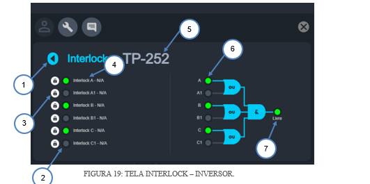
FIGURA 19: TELA INTERLOCK – INVERSOR.
ÍCONES ABA DE INTERLOCK - INVERSOR
| Ícone | Descrição |
|---|---|
| 1 | Retorna para a aba de operação. |
| 2 | Indica se o interlock está liberado ou bloqueado. |
| 3 | Ativa o bypass individual de cada interlock. |
| 4 | Apresenta a descrição do interlock. |
| 5 | Mostra o nome do equipamento. |
| 6 | Segunda indicação do status do interlock. |
| 7 | Indica que o equipamento está livre de bloqueios por interlock. |
TABELA 19: ÍCONES ABA DE INTERLOCK - POP UP INVERSOR.